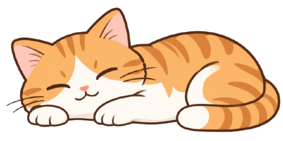
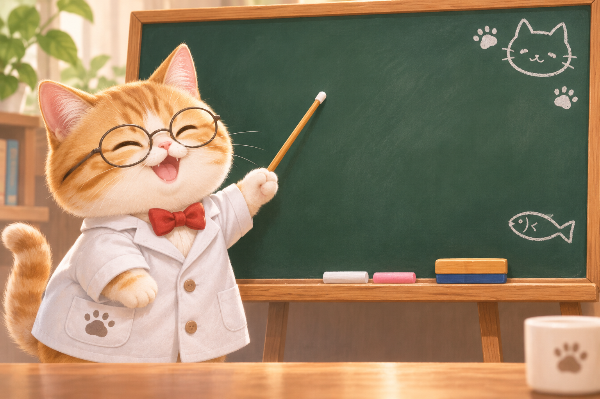
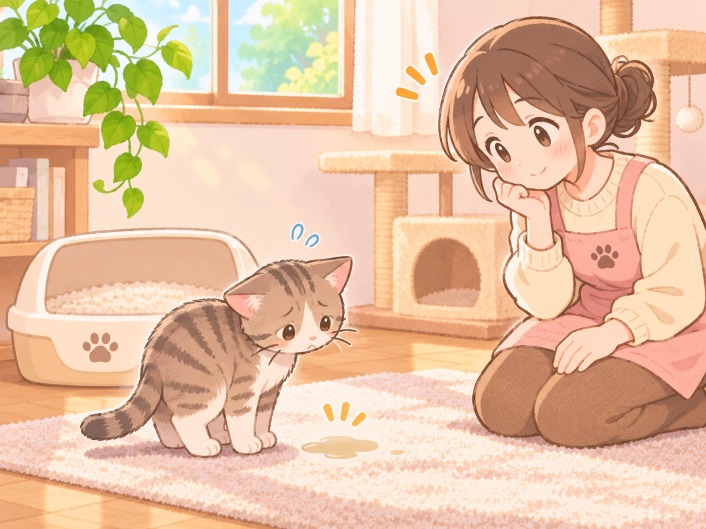
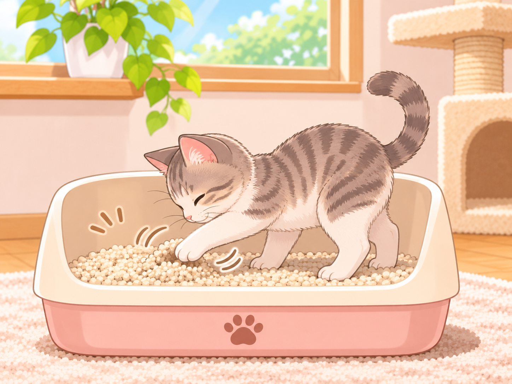
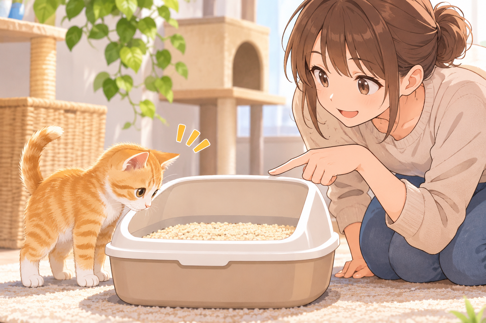
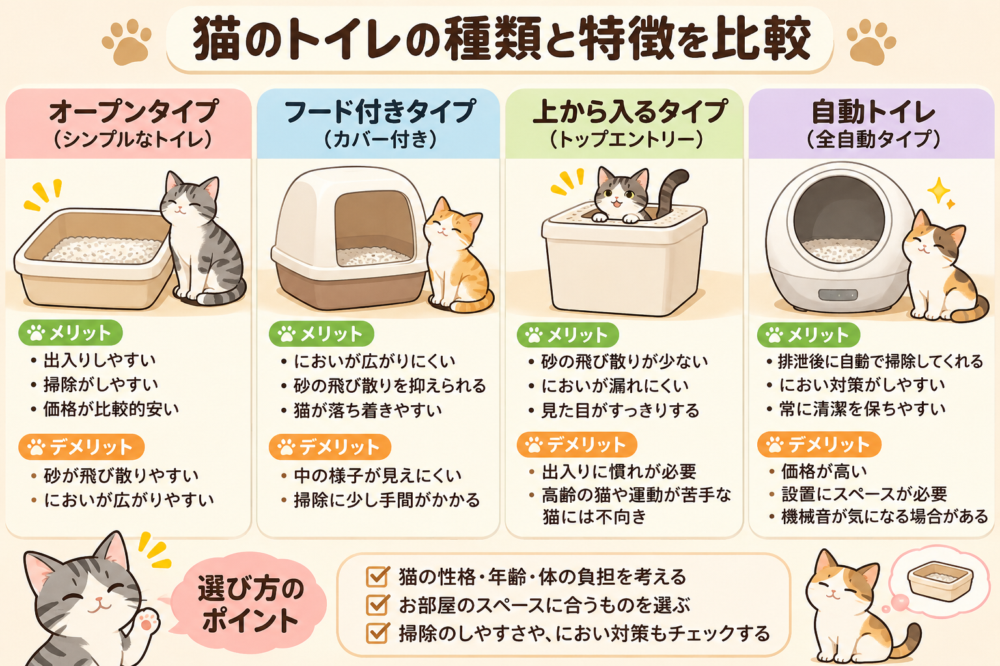

猫用のトイレを準備したのになかなかトイレで排泄してくれないと悩んでいる方もいるのではないでしょうか。
猫がトイレ以外の場所で排泄するのは、トイレの大きさや猫砂の種類・トイレ自体の置き場所に不満があるのかもしれません。

「トイレが汚れている」 猫はきれい好きな動物なので、トイレが汚れていると使うことを嫌がります。
「トイレの場所が落ち着かない」 猫がトイレを使わないのは、トイレの置き場所が騒がしくて、落ち着かないことが原因かもしれません。
「病気」 色々と試しても猫の粗相が続くときは膀胱炎や腎臓病などを患っている可能性もあります。トイレ環境を整えてもなかなか粗相が減らない時は、動物病院に相談しましょう。

「早くトイレから出たい」 排泄後にトイレから飛び出てくる場合、トイレや猫砂に不満があったり、置き場所が合わないのかもしれません。
「飼い主さんが片付けるとわかっているから」 猫が排泄物に砂をかけて隠すのは、自分のニオイを消すことで自分より強い敵に存在を気づかれないようにするための本能的な行動といわれています。しかし、家庭で飼育されている猫は、飼い主さんが片付けてくれるとわかっているので、砂をかける必要はないと思っている猫もいるようです。

「トイレのサインに気づいたらトイレに連れていく」 猫が見せるトイレのサインに気づいてあげることが大事です。「落ち着きがない」「床のニオイをかぐ」「床を手で掘る仕草をする」といったサインに気づいたら、トイレに連れて行ってあげましょう。
「失敗しても怒らない」 トイレに失敗したときに叱ると猫は排泄が悪いことだと思うようになります。その結果、排泄を我慢しすぎて膀胱炎になってしまいます。
「トイレでできたら褒める」 トイレで排泄できたらしっかりと褒めてあげましょう。褒めてもらえると猫はトイレを早く覚えます。

「トイレのサイズは体長の1.5倍以上」 このくらいの広さがあれば、猫はトイレの中で方向転換したり、猫砂を掻いたりしやすくなります。
「ある程度の深さが必要」 猫は排泄後に猫砂をかけて隠すため、トイレは猫砂が十分入るほどの深さが必要であり、深さが足りないと猫砂がトイレの外まで散らばってしまいます。
「騒がしくない場所に置く」 トイレを置く場所は、家の中の静かな場所を選びましょう。猫が落ち着いて排泄できる場所を選んであげるようにしてあげましょう。